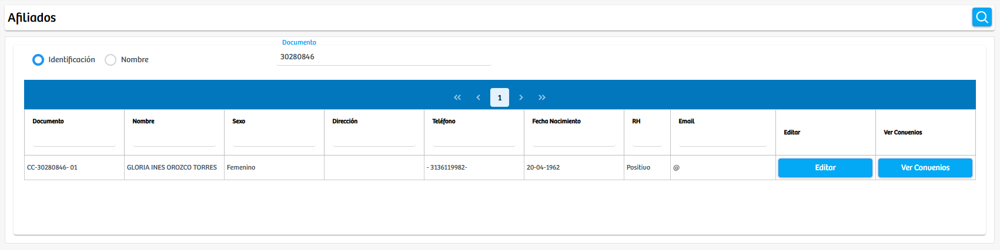
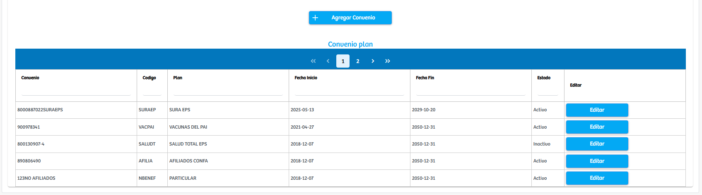

Modulos Sas-Web
Funcionalidades
Afiliados
Afiliados es el tercer modulo de la aplicación SASWEB, como su nombre lo indica es allí donde podemos averiguar información puntual sobre el afiliado que se vaya a buscar. Datos como: El documento, nombre, sexo, dirección, teléfono, fecha de nacimiento, RH, email. Por cada registro que aparece en la tabla se muestran 2 botones mas: “Editar” que al presionarlo nos permite ver y actualizar la información del registro de este paciente... Y el de “Ver convenios”, que cuando se presiona, aparece primero un botón donde podremos agregar otro convenio al usuario y una segunda tabla en la parte inferior la cual contiene los convenios a los cuales pertenece el usuario.
 